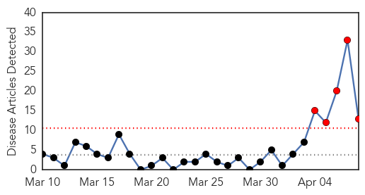
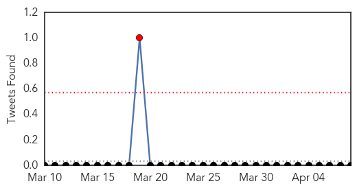
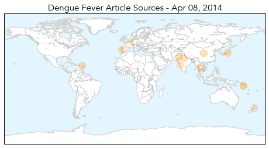
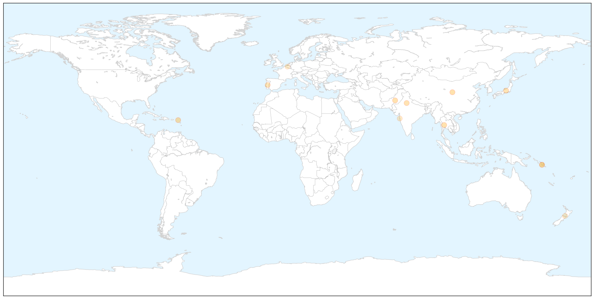
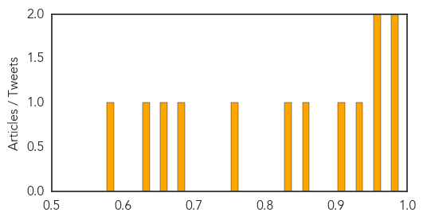
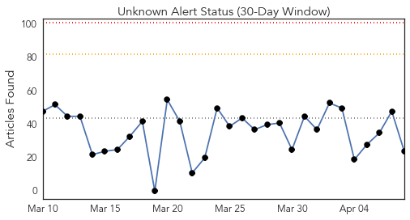
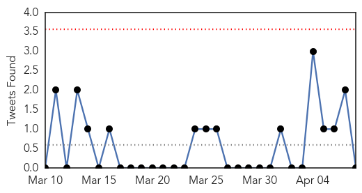
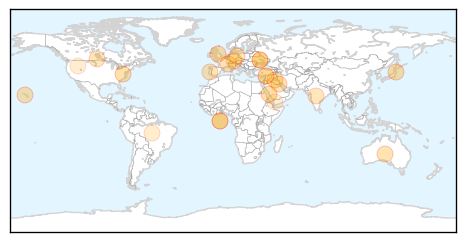
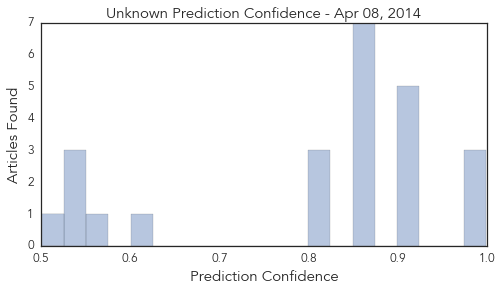

Dengue Fever
30-Day Web Trend
5 alerts, 0 warnings

30-Day Twitter Trend
1 alerts, 0 warnings

Article Locations

X

Article Confidences
Top Articles:
- 0.998
- Inner-city residents face greater risk of disease
- 0.982
- Increasing threat of vectorborne diseases discussed
- 0.970
- U.N. Attacks Biting Bugs that Spread Diseases — Naharnet
- 0.957
- Swedish researchers map the risks of new virus epidemic in Europe
- 0.943
- Vector-borne diseases: Lack of accurate data hampers policy formulation, says expert
- 0.907
- Simple preventive steps can control vector-borne diseases: Experts
- 0.866
- World Health Day 2014 observed : 08th apr14 ~ E-Pao! Headlines
- 0.849
- 'Breakbone' fever is coming to Europe thanks to global warming, Swedish scientists say
- 0.750
- Disease threatens flood-hit Solomon Islands
- 0.689
- Death Toll Rises to 23 in Solomons Floods — Naharnet
- 0.664
- Dabbawalas join hands with WHO
- 0.638
- Disease threatens flood-hit Solomons. Emergencies. Tengrinews.kz
- 0.600
- Scientist may have key to nodding syndrome
Top Tweets:
-
No tweets found for Apr 08, 2014
Unknown
30-Day Web Trend
0 alerts, 0 warnings

30-Day Twitter Trend
0 alerts, 0 warnings

Article Locations

Article Confidences
Top Articles:
- 0.998
- MERS Fears Prompt ER Closure at Saudi Hospital — Naharnet
- 0.994
- Japan Orders Strict Measures Against PED Virus
- 0.981
- Cases of scarlet fever in Wales reach 20 year high
- 0.917
- Chicago Tribune
- 0.917
- Chicago Tribune
- 0.917
- Chicago Tribune
- 0.917
- Chicago Tribune
- 0.917
- Chicago Tribune
- 0.866
- Russia's Lavrov, EU's Ashton discuss Ukraine crisis
- 0.866
- Russia says NATO trapped in "Cold War thinking"
- 0.866
- Environmental activists protest against the deal with Germany's Renewable Energy Law in front of the Chancellery in Berlin
- 0.866
- File photo of construction workers fixing solar panels for solar power plant near Olching
- 0.866
- NATO head warns Russia of "grave consequences" over Ukraine
- 0.866
- Record low wheat output expected in Syria as drought looms
- 0.855
- New Leaflet Spells out Dangers of African Swine Fever
- 0.816
- African Swine Fever Risk Level Raised
- 0.812
- PED remains a concern in Ontario
- 0.806
- Read Health Articles & Blogs at TheHealthSite.com
- 0.602
- HSC doctor receives $2 million grant for research on pandemic disease
- 0.555
- Prince William News
- 0.547
- Nationwide polio prevention campaign launched
- 0.542
- UN and partners renew anti-polio efforts in Middle East after first case detected in Iraq
- 0.536
- The Argonaut – Spreading awareness, not disease — Get Yourself Tested campaign begins on campus this week
- 0.501
- Obama signs cancer research bill in memory of girl
Top Tweets:
-
No tweets found for Apr 08, 2014